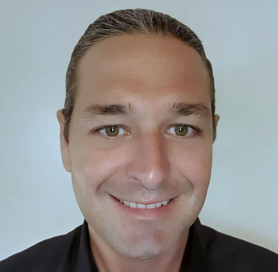

Technicien de maintenance en informatique
Yoann Perez
Francais - 39 ans - celibataire - Permis B
Contact
- 50260 NEGREVILLE
- Tél & Whatsapp: (+33) 06 13 50 08 09
- Email : yoann.perez@gmail.com
- Site Web : https://360creaciones.com
- Projets personnel :
- https://facebook.com/360creaciones/
- https://facebook.com/unojoentenerife/
Langues
Anglais - Espagnol : Niveau A2
compétances
- Analyser des problèmes techniques
- Bonnes connaissances de systèmes d'exploitation MaxOSX, Windows & Linux
- Administration de serveurs Windows & bases Unix
- Diagnostiquer la nature et l'origine des incidents et mettre en oeuvre les mesures correctives
- Assister techniquement les services de l'entreprise ou les clients
- Former un public à l'utilisation d'un équipement
- Gestes et postures de manutention
- Installer un équipement informatique
- Paramétrages de logiciels
- Réalisation d'une opération de maintenance
- Configuration des messageries
- Systèmes réseau ( LAN, MAN, WAN )
- Mettre en place les procédures techniques d'exploitation, d'utilisation et de sécurité des équipements informatiques
- Relation avec la clientèle
Intégration Web
- Wordpress
- HTML, CSS
Savoir-être
- Autonomie
- Capacité d'adaptation
- Curiosité
- Force de proposition
- Gestion du stress
- Réactivité, rigueur, mobilité
- Travail en équipe
Centres d'intérêts
- Plongée sous-marine
- Musique
- Cinéma
- Lecture
- Technologies

Fort des expériences acquises au cours de ces 18 dernières années, occupant différents postes à responsabilités audiovisuelles, informatiques et artistiques, je souhaite désormais réorienter ma carrière professionnelle vers les domaines de l'informatique, de l'installation, de la configuration et de l'assistance à la clientèle.
Expérience professionnelle
09/2017 - 08/2020 : 360creaciones.com
Freelance, réalisation de visites virtuelles en 360°.
Prises de vues aquatiques, services audiovisuels
08/2005 - 12/2017 : Régisseur audioviseul (Son - Vidéo)
Installation, réglage et entretien des équipements.
Régies, création de bandes sonores & vidéos
En fixe et spéctacles en tournées
04/2016 - 09/2016 : Directeur technique adjoint
La Ferme du Buisson - Scène nationale de Nosiel
Administration du réseau informatique
2015 : Développement Web
Compagnie carré blanc sur fond bleu
09/2005 - 07/2008 : Ingénieur du son
L'équipe TV
09/2003 - 07/2005 : Assistant département son
EICAR Cherbourg Assistant TES & TMO
Régisseur conférences et évènementiels
AOUT 2002 : Technicien Electronicien
SANMINA TOURLAVILLE
Contrôle et calibration des émetteurs hyperfréquences
Formations
- 2006 - 2020 : Autoformation diverses
- 2006 : MAX/MSP pour les régisseurs de théâtre - IRCAM - Paris
- 2001 - 2003 : BTS Audiovisuel spécialité Son. Lycée de l'image et du son (LISA) - Angoulême
- 2001 : BAC STI Génie électronique - Lycée Alexis de Tocqueville - Cherbourg